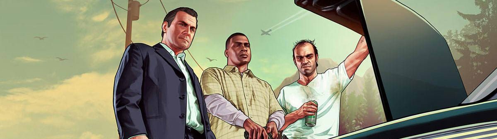

Grand Theft Auto V - GTA V
Grand Theft Auto V là một trò chơi điện tử hành động phiêu lưu năm 2013 do Rockstar North phát triển và Rockstar Games phát hành
Giới thiệu
Lấy bối cảnh tại tiểu bang hư cấu San Andreas ở miền Nam California, cốt truyện của chế độ chơi đơn xoay quanh ba nhân vật chính—tên cướp ngân hàng đã giải nghệ Michael De Santa, tên giang hồ đường phố Franklin Clinton, tên bán thuốc phiện và buôn lậu vũ khí Trevor Philips—cũng như các phi vụ trộm cướp mà chúng thực hiện dưới áp lực từ một cơ quan chính phủ và những tên tội phạm khác. Thiết kế thế giới mở cho phép người chơi tự do khám phá vùng nông thôn của San Andreas cũng như thành phố hư cấu Los Santos (dựa vào Los Angeles).

Với góc nhìn thứ ba hay thứ nhất trong Grand Theft Auto V, người chơi có thể đi bộ hoặc lái các phương tiện để di chuyển trong trò chơi. Trong chế độ chơi đơn, người chơi điều khiển và có thể chuyển đổi qua lại giữa ba nhân vật chính dù có đang làm nhiệm vụ hay không. Cốt truyện tập trung vào các phi vụ trộm cướp; lối chơi lái xe và bắn súng xuất hiện trong nhiều nhiệm vụ. Hệ thống "truy nã" sẽ đưa ra quyết định về phản ứng của lực lượng thực thi pháp luật với các hành động của người chơi. Grand Theft Auto Online, chế độ nhiều người chơi trực tuyến của Grand Theft Auto V, cho phép 30 người chơi cùng tham gia vào nhiều loại nhiệm vụ khác nhau, cả phối hợp lẫn thi đấu.
Lối chơi
Grand Theft Auto V là trò chơi hành động phiêu lưu được chơi từ góc nhìn thứ ba hoặc thứ nhất. Người chơi thực hiện nhiệm vụ bao gồm các tình huống tuyến tính với mục tiêu định sẵn để tiến triển cốt truyện của trò chơi. Khi không làm nhiệm vụ, người chơi có thể tự do khám phá thế giới mở trong trò chơi, gồm hai khu vực là vùng nông thôn của San Andreas, trong đó có Quận Blaine và thành phố Los Santos. Thế giới của Grand Theft Auto V có diện tích lớn hơn nhiều so với các phần trước trong dòng trò chơi. Người chơi có thể khám phá thế giới ngay từ đầu game mà không gặp phải giới hạn nào, mặc dù vậy việc phát triển cốt truyện sẽ mở khóa nhiều nội dung trong lối chơi.

Người chơi có thể cận chiến, sử dụng súng hoặc chất nổ để chiến đấu với kẻ địch. Đồng thời có thể chạy, nhảy, bơi hoặc lái các phương tiện để di chuyển trong thế giới game. So với Grand Theft Auto IV thì Grand Theft Auto V đưa vào các loại phương tiện mới phù hợp để di chuyển trong thế giới rộng lớn, chẳng hạn như máy bay cánh cố định. Khi chiến đấu, người chơi có thể sử dụng chế độ tự động ngắm và cover system. Khi người chơi bị thương, thanh "máu" sẽ tự phục hồi từ từ đến mức một nửa. Khi mất hết "máu", người sẽ phải hồi sinh ở các bệnh viện. Nếu người chơi phạm luật, các lực lượng thi hành pháp luật có thể sẽ phản ứng dựa trên mức độ "truy nã" được hiển thị trên giao diện của trò chơi. Mức độ truy nã hiện tại được thể hiện bởi các ngôi sao (ví dụ, ở mức độ tối đa là 5 sao, người chơi sẽ bị trực thăng của cảnh sát và các đội SWAT truy bắt). Khi người chơi thoát khỏi tầm nhìn của các lực lượng đó (hiển thị trên bản đồ nhỏ), mức độ truy nã sẽ chuyển sang chế độ cool-down và giảm xuống dần dần.
Chế độ chơi đơn cho phép người chơi điều khiển ba nhân vật: Michael De Santa, Trevor Philips và Franklin Clinton, những tên tội phạm có sự kết nối trong cốt truyện khi họ hoàn thành nhiệm vụ. Một số nhiệm vụ chỉ có sự xuất hiện của một trong ba nhân vật, trong khi nhiều nhiệm vụ khác thì có hai hoặc cả ba. Khi không làm nhiệm vụ, người chơi có thể chuyển đổi qua lại giữa các nhân vật bất cứ lúc nào bằng một chiếc la bàn trên giao diện của game. Hình đại diện của một nhân vật trên chiếc la bàn này sẽ phát sáng màu đỏ nếu nhân vật đó đang gặp nguy hiểm hoặc cần trợ giúp và phát sáng màu trắng nếu nhân vật đó nắm lợi thế trong một tình huống nhất định. Ngoài ba nhân vật chính, các phi vụ trộm cướp lớn có độ khó cao hơn đòi hỏi sự trợ giúp của các đồng phạm do AI điều khiển với những kỹ năng đặc biệt như hack hay lái xe. Nếu một tên đồng phạm sống sót sau khi phi vụ thành công, họ sẽ được chia chiến lợi phẩm và có thể được sử dụng trong các phi vụ sau này, đồng thời kỹ năng đặc biệt của nhân vật đó cũng tăng lên. Một số phi vụ có thể được tiến hành theo nhiều cách; chẳng hạn, người chơi có thể vô hiệu hóa những người có mặt ở nơi mình cướp một cách lén lút, hoặc cầm súng xông thẳng vào địa điểm đó.
Bạn có thể tham khảo thêm thông tin tại đây
Tải game
Hiện có thể tải game qua các nền tảng: Microsoft Windows, Playstation và Xbox
Thông tin thêm
| Nhà phát triển | Rockstar North. |
| Nhà phát hành | Rockstar Games. |
| Công Nghệ | RAGE. |
| Nền tảng | Microsoft Windows, Playstation, Xbox. |
| Chế độ | Nhiều người chơi, một người chơi. |
| Thể loại | Hành động, phiêu lưu. |